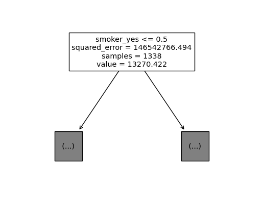

import numpy as np
import pandas as pd
import matplotlib.pyplot as plt
import sklearn.tree
import graphviz
#---#
import warnings
warnings.filterwarnings('ignore')11wk-041: Medical Cost / 의사결정나무 max_feature,random_state
1. 강의영상
2. Imports
3. 데이터준비
df_train = pd.read_csv('https://raw.githubusercontent.com/guebin/MP2023/main/posts/insurance.csv')
df_train| age | sex | bmi | children | smoker | region | charges | |
|---|---|---|---|---|---|---|---|
| 0 | 19 | female | 27.900 | 0 | yes | southwest | 16884.92400 |
| 1 | 18 | male | 33.770 | 1 | no | southeast | 1725.55230 |
| 2 | 28 | male | 33.000 | 3 | no | southeast | 4449.46200 |
| 3 | 33 | male | 22.705 | 0 | no | northwest | 21984.47061 |
| 4 | 32 | male | 28.880 | 0 | no | northwest | 3866.85520 |
| ... | ... | ... | ... | ... | ... | ... | ... |
| 1333 | 50 | male | 30.970 | 3 | no | northwest | 10600.54830 |
| 1334 | 18 | female | 31.920 | 0 | no | northeast | 2205.98080 |
| 1335 | 18 | female | 36.850 | 0 | no | southeast | 1629.83350 |
| 1336 | 21 | female | 25.800 | 0 | no | southwest | 2007.94500 |
| 1337 | 61 | female | 29.070 | 0 | yes | northwest | 29141.36030 |
1338 rows × 7 columns
4. max_features
- max_features에 대한 제한을 주지 않음 \(\to\) 항상 같은 결과가 나옴
# step1
X = pd.get_dummies(df_train.loc[:,'age':'region'],drop_first=True)
y = df_train['charges']
# step2
predictr = sklearn.tree.DecisionTreeRegressor()
# step3
predictr.fit(X,y)
# step4 -- pass DecisionTreeRegressor()In a Jupyter environment, please rerun this cell to show the HTML representation or trust the notebook.
On GitHub, the HTML representation is unable to render, please try loading this page with nbviewer.org.
DecisionTreeRegressor()
sklearn.tree.plot_tree(predictr,max_depth=0,feature_names=X.columns);
- max_features=4로 제한
len(X.columns) 8max_features=4로 제한한다는 의미는 8개의 설명변수중에서 4개만 임의로 뽑아서 그중에서 “최적의 변수”와 “최적의 \(c\)”를 찾겠다는 의미
# step1
X = pd.get_dummies(df_train.loc[:,'age':'region'],drop_first=True)
y = df_train['charges']
# step2
predictr = sklearn.tree.DecisionTreeRegressor(max_features=4)
# step3
predictr.fit(X,y)
# step4 -- pass DecisionTreeRegressor(max_features=4)In a Jupyter environment, please rerun this cell to show the HTML representation or trust the notebook.
On GitHub, the HTML representation is unable to render, please try loading this page with nbviewer.org.
DecisionTreeRegressor(max_features=4)
sklearn.tree.plot_tree(predictr,max_depth=0,feature_names=X.columns);
- 절반정도는 smoking 유무가 가장 위에 위치한다.
5. random_state
- max_features=4로 제한
# step1
X = pd.get_dummies(df_train.loc[:,'age':'region'],drop_first=True)
y = df_train['charges']
# step2
predictr = sklearn.tree.DecisionTreeRegressor(max_features=4,random_state=43)
# step3
predictr.fit(X,y)
# step4 -- pass DecisionTreeRegressor(max_features=4, random_state=43)In a Jupyter environment, please rerun this cell to show the HTML representation or trust the notebook.
On GitHub, the HTML representation is unable to render, please try loading this page with nbviewer.org.
DecisionTreeRegressor(max_features=4, random_state=43)
sklearn.tree.plot_tree(predictr,max_depth=0,feature_names=X.columns);